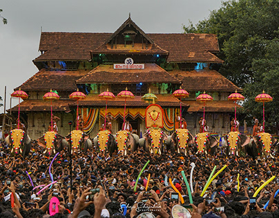
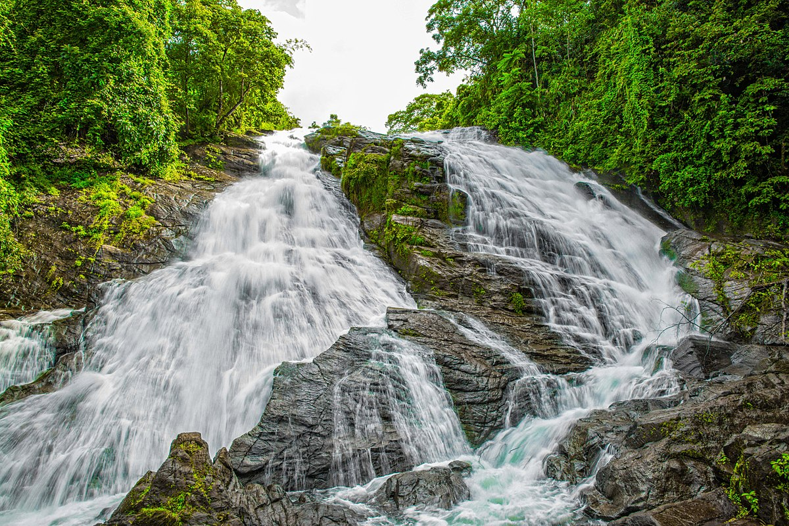

The Vadakkumnathan Temple is an ancient Hindu temple dedicated to Shiva in Thrissur, in the Thrissur district of Kerala, India. The temple is a classical example of the architectural style of Kerala and has one monumental tower on each of the four sides in addition to a koothambalam. Mural paintings depicting various scenes from the Mahabharata can be seen inside the temple.[1][2][3] The shrines and the Kuttambalam display vignettes carved in wood.The temple, along with the mural paintings, has been declared as a National Monument by India under the AMASR Act.[4] According to popular local lore, this is the first temple built by Parashurama,the sixth avatar of Vishnu.
Thekkinkadu Maidan, encircling the Vadakkumnathan Temple, is the main venue of the renowned Thrissur Pooram festival.[1][2]In 2012, the Archaeological Survey of India (ASI) has recommended 14 sites, including Vadakkumnathan Temple and palaces, from Kerala to include in the list of UNESCO World Heritage Sites.[5] The temple is also the first one among the 108 Shiva Temples in ancient Kerala, established by Parashurama.Further more
Athirapilly Falls is situated in Athirapilly Panchayat in Chalakudy Taluk of Thrissur District in Kerala, India on the Chalakudy River, which originates from the upper reaches of the Western Ghats at the entrance to the Sholayar ranges. It is the largest waterfall in Kerala, which stands tall at 81.5 feet. Just a short drive from Athirapilly to the Vazhachal Falls, which is close to dense green forests that are home to many endangered and endemic species of flora and fauna. There is another waterfall on the way from Athirapilly to Vazhachal Falls, in close proximity to the road, which is locally called "Charpa Falls".
Athirappilly Falls is the largest waterfall in Kerala and is nicknamed "The Niagara of South India".Forest wildlife in the area includes the Indian elephant, Bengal tiger, Indian leopard, gaur, sambar, and lion-tailed macaque. The unique 180 metres (590 ft) elevation riparian forest in the Athirappilly-Vazhachal area is the only location where all four South Indian species of hornbills — the great hornbill (the state bird of Kerala), Malabar pied hornbill, Malabar grey hornbill, and the Indian grey hornbill are found living together.Further more